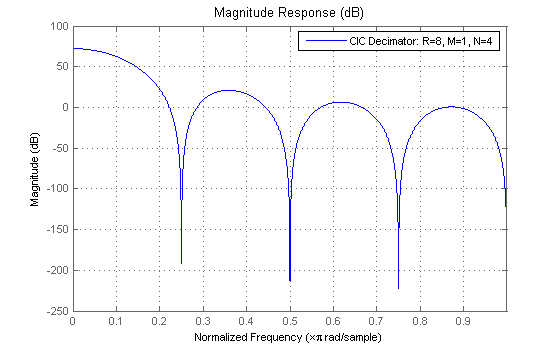

This demonstration shows how to use the multirate CIC decimation filters in the Filter Design Toolbox.
CIC filters are efficient, multiplierless structures which are used in high-decimation or interpolations systems. CIC filters utilize the fact that perfect Pole/Zero cancelation can be attained when the filter is implemented using integer arithmetic that will wrap on overflow. CIC filters are commonly used in digital down-converters (DDCs) and digital up-converters. See Design of a Digital Down-Converter for GSM for an example of a CIC decimator used for GSM.
To obtain information about creating CIC decimation filter objects, type "helpwin mfilt/cicdecim" or "helpwin mfilt/cicdecimzerolat" For a complete list of available multirate filters in the Filter Design Toolbox, type "helpwin mfilt"
The Filter Design Toolbox provides two, slightly different, CIC decimation filter structures. To create a CIC decimator object, you must first select which structure to use. The first structure is simply called, Cascaded Integrator-Comb Decimator and is optimized for pipelined implementations such as on FPGAs. The following Simulink model provides a signal-flow graph of the structure:
open_system('mfilt_cicdecim')
To create a default Cascaded Integrator-Comb Decimator object, type the following:
Hm = mfilt.cicdecim
Hm =
FilterStructure: 'Cascaded Integrator-Comb Decimator'
DifferentialDelay: 1
NumberOfSections: 2
InputBitWidth: 16
OutputBitWidth: 16
BitsPerSection: 16
DecimationFactor: 2
NonProcessedSamples: []
ResetBeforeFiltering: 'on'
States: [2x2 int32]
NumSamplesProcessed: 0
The second structure is known as the Zero-Latency Cascaded Integrator-Comb Decimator. This structure implements the CIC as originally introduced in the reference cited below.
open_system('mfilt_cicdecimzerolat')
To create a default Zero-Latency Cascaded Integrator-Comb object, type the following:
Hm1 = mfilt.cicdecimzerolat
Hm1 =
FilterStructure: 'Zero-Latency Cascaded Integrator-Comb Decimator'
DifferentialDelay: 1
NumberOfSections: 2
InputBitWidth: 16
OutputBitWidth: 16
BitsPerSection: 16
DecimationFactor: 2
NonProcessedSamples: []
ResetBeforeFiltering: 'on'
States: [2x2 int32]
NumSamplesProcessed: 0
As seen in both Simulink models above, a CIC decimation filter is composed of three sections: an integrator section, a rate change factor, and a comb section. Therefore, one can completely specify a CIC decimation filter with three parameters: a decimation factor, the number of sections (i.e., the number of individual integrator or comb sections), and the differential delay of the comb section.
The difference between the two CIC decimation filters is the number of samples by the filter's output lags behind the corresponding input. The MFILT.CICDECIM filter has a delay of N, the number of sections. The following simple examples illustrates this delay:
% Filter Parameters R = 1; % Decimation factor M = 1; % Differential delay of the comb section N = 4; % Number of sections x = int16(ones(1,10)); % Integer vector of ones set(Hm,'DecimationFactor',R,'DifferentialDelay',M,'NumberOfSections',N) y = filter(Hm,x) % Zero-Latency version set(Hm1,'DecimationFactor',R,'DifferentialDelay',M,'NumberOfSections',N) y1 = filter(Hm1,x)
y =
0 0 0 0 1 1 1 1 1 1
y1 =
1 1 1 1 1 1 1 1 1 1
Analysis of CIC filters is the same as any MFILT (multirate filter) object available in the Filter Design Toolbox. The Filter Visualization Tool (FVTool) provides graphical access to all analyses.
Hm = mfilt.cicdecim(8,1,4); hfvt = fvtool(Hm); legend(hfvt, 'CIC Decimator: R=8, M=1, N=4'); set(hfvt,'Color',[1 1 1]);
One of the conditions required to avoid overflows in the integrator sections of a CIC filter, is that the filter be implemented with two's complement arithmetic or other number system, which allows 'wrap-around' between the most positive and most negative numbers. To that end, the CIC decimation filters of the Filter Design Toolbox require that you supply your input data in one of the built-in MATLAB integer data types, for example: signed 8-bit integer, int8, signed 16-bit integer, int16, and signed 32-bit integer, int32.
% Input signal x = int16(ones(1,10)); set(Hm,'DecimationFactor',2,'DifferentialDelay',1,'NumberOfSections',2); y = filter(Hm,x)
y =
0 1 4 4 4
For further information about the filtering with MFILT objects, see the "Getting started with MFILT objects" demo.
The states property of CIC decimation filters contains a matrix which represents the initial conditions of both the integrator and comb sections of the filter. The matrix has dimensions M+1-by-N, where M is the differential delay of the comb section and N is the number of sections. The states for the integrator section are stored in the first row of this matrix and the states for the comb portion fill the remaining rows in the matrix. The states values are both stored and specified in the int32 format.
There are two properties of CIC decimation filters which define the wordlength of the input and output signals. These properties are the InputBitWidth and OutputBitWidth respectively. The InputBitWidth property can be either 8, 16, or 32 bits. The OutputBitWidth can be any positive integer in the range of 1 to 32. The filter method will use this OutputBitWidth value and return the smallest integer data type that can hold the OutputBitWidth for the output signal
set(Hm,'InputBitWidth',8,'OutputBitWidth',15); x = int8(ones(1,10)); y = filter(Hm,x); class(y)
ans = int16
The most significant bit (MSB) of the filter output is a function of the parameters, R, M, N and the InputBitWidth. Since the output of the integrators can grow without bound, this MSB represents the maximum number of bits which can be propagated through the filter without loss of data. This MSB is not only the MSB at the filter output; it is also the MSB for all sections.
The intermediate sections of the CIC decimation filter methods are restricted to 32-bits. In the case when the MSB at the filter output is greater than 32, the overall sum could overflow which will cause wrong results. A warning will be thrown from the filter method if the MSB is too large.
The following example illustrates a valid scenario (because the MSB is less than 32) and the tools available from the Filter Design Toolbox to help you determine your filter's MSB:
Hm = mfilt.cicdecim(7,1,4,16,16,16); filtmsb(Hm)
ans =
28
The following example illustrates a scenario in which the output could overflow (because the MSB is greater than 32).
Hm = mfilt.cicdecim(10,2,8,16,16); filtmsb(Hm)
ans =
51
x = int16(ones(1,10)); y = filter(Hm,x);
Warning: Most significant bit at the filter output is limited to 32. Results maybe inaccurate.
The BitsPerSection property of the CIC decimation filters defines the section specific precision used during either the accumulation of the data in the integrator sections or the subtraction of the data performed by the comb sections.
The following rules have been defined:
1. If the BitsPerSection property is a scalar, the filter method will expand this scalar to a vector of length 2*N, representing the Bits Per Section for all 2*N sections.
2. If the BitsPerSection property is a vector and its length is LESS than 2*N it will error upon invoking the filter method or if the length of the vector is GREATER than 2*N, we will warn and truncate the vector to length 2*N. If a vector is specified for the BitsPerSection property, it must be monotonically decreasing.
It is possible to truncate some of the least significant bits (LSBs) to reduce the overall wordlengths of each section without significantly violating the original filter design constraints. The output of a particular section is where the LSBs (which are defined for a particular section) are removed. As seen in the Simulink models above, the output of a particular section is where the LSBs are removed (this is denoted by the blocks labeled "rm LSBs").
% Decimation filter design example M = 1; % Differential delays N = 4; % Number of sections R = 25; % Rate-change factor % Step signal x = int16(ones(1000,1)); % Create a CIC decimation filter and define an OutputBitWidth and % BitsPerSection property all of 32-bits so that no LSBs are removed. Hm = mfilt.cicdecim(R,M,N,16,32,32); y_rmnolsbs = filter(Hm,x); y_rmnolsbs = double(y_rmnolsbs); % The BitsPerSection were determined based on the design example found on % page 159 of the reference cited below. In that example, we were given % the number of LSB's which can be discarded ([1 6 9 13 14 15 16 17]) % without violating the filter design which led to the following % BitsPerSection vector BPS = [32 28 25 21 20 19 18 17]; % Create a second object and set its BitsPerSection property Hm1 = mfilt.cicdecim(R,M,N,16,16,BPS); y_rmlsbs = filter(Hm1,x); y_rmlsbs = double(y_rmlsbs); % Plot the results a = y_rmnolsbs/max(y_rmnolsbs); b = y_rmlsbs/max(y_rmlsbs); indx = 1:length(a); figure; plot(indx,a,indx,b,'--'); grid; legend('32-bits per section','1, 6, 9, 13, 14, 15, 16, 17-bits LSBs discarded'); xlabel('Samples'); ylabel('Amplitude'); set(gcf, 'Color', [1 1 1]);
Warning: Most significant bit at the filter output is limited to 32. Results maybe inaccurate. Warning: Most significant bit at the filter output is limited to 32. Results maybe inaccurate.
Hogenauer, E. B., "An Economical Class of Digital Filters for Decimation and Interpolation", IEEE Transactions on Acoustics, Speech, and Signal Processing, Vol. ASSP-29, No. 2, April 1981, pp. 155-162.